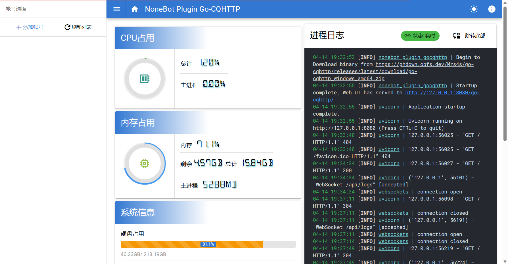
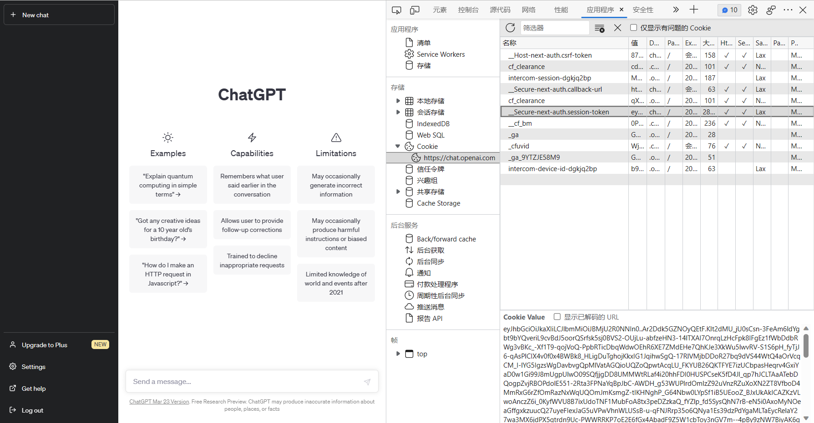

by 宇航员Dale
近日闲暇之余，好朋友在写QQbot，我对此也感兴趣，就也尝试了一些简易的操作。当简易QQbot搭建好了之后，我便想着能不能接入ChatGPT，于是尝试了一番，最后成功了。鉴于在平台中没有搜索到相关的具体教程，便萌生了把这些写下来的想法。笔者并非计算机专业学生，因此此文档中的各种错误敬请各位批评指正。
本项目基于nonebot2、go-cqhttp（以及插件nonebot-plugin-gocqhttp）、nonebot2中的ChatGPT插件nonebot-plugin-chatgpt-plus，本教程适用的系统版本为Windows10/11，Python版本3.8+。各项目地址为：
本项目需要3.8以上的Python环境，如果你的电脑没有3.8+的Python环境，可以参考python详细安装教程 - 知乎 (zhihu.com)，这个教程简洁明了。
Python官方网页：Welcome to Python.org
ChatGPT的注册方法在此不赘述，可自行搜索。本机器人运行时不需要魔法，但是ChatGPT的注册和登陆需要魔法，而且本机器人运行需要获取ChatGPT登陆后的token，因此是否进行魔法需要各位自行斟酌（逃
ChatGPT官网：https://chat.openai.com
此步可以参照nonebot2官方文档快速上手 | NoneBot，鉴于此机器人不需自己创建插件，因此简化如下：
首先已经确保安装了Python3.8+，然后在命令行中执行如下命令：
python -m pip install --user pipx随后执行：
xxxxxxxxxxpython -m pipx ensurepath如果界面中输出了“open a new terminal”或者“re-login”字样，请关闭当前终端并重新打开一个新的终端。
随后执行：
xxxxxxxxxxpipx install nb-cli待其安装完后，便可以使用nb命令运行nonebot2或者创建项目了。
在你喜欢的位置创建一个文件夹，然后在文件夹内右键选择在终端中打开。随后输入：
xxxxxxxxxxnb create如果前面一切顺利，这里会出现如下提示：
xxxxxxxxxx[?] 选择一个要使用的模板: bootstrap (初学者或用户) simple (插件开发者)使用↑↓方向键选择bootstrap，随后回车。
接下来出现如下界面，在名称中输入项目名称，这里以qqbot为例：
xxxxxxxxxx[?] 项目名称: qqbot然后依次出现多个选择界面，请按照下面的结果选择：（部分多选需使用空格确认选择）
xxxxxxxxxx[?] 要使用哪些驱动器? FastAPI (FastAPI 驱动器)[?] 要使用哪些适配器? OneBot V11 (OneBot V11 协议)[?] 立即安装依赖? (Y/n) Yes[?] 创建虚拟环境? (Y/n) Yes随后出现如下界面，选择echo（一个简单的内置复读插件，可以用来测试bot是否正常运行）：
xxxxxxxxxx[?] 要使用哪些内置插件? echo随后出现“完成”等字样说明项目创建成功。
回到刚才的终端，输入“cd + 项目名称”进入项目所在目录：
xxxxxxxxxxcd qqbot接着输入如下命令：
xxxxxxxxxxnb plugin install nonebot-plugin-gocqhttp出现”Successfully installed“字样说明安装成功。随后进行go-cqhttp的配置。
在终端中输入：
xxxxxxxxxxnb run随后最后一条出现如下字样说明运行成功：
xxxxxxxxxx[INFO] nonebot_plugin_gocqhttp | Startup complete, Web UI has served to http://127.0.0.1:8080/go-cqhttp/[INFO] uvicorn | Application startup complete.[INFO] uvicorn | Uvicorn running on http://127.0.0.1:8080 (Press CTRL+C to quit)其中第一行里“Web UI has served to”后面的链接为go-cqhttp插件Web UI运行的地址。
打开任意一个浏览器，输入“Web UI has served to”后面的链接，如上示例为http://127.0.0.1:8080/go-cqhttp/
随后进入了Web UI界面，如下图：

随后点击左侧添加账号，输入想设置为机器人的QQ账号（如果没有可以用手机新注册），密码不填，登录设备类型选择“Android Watch”。
随后在进程状态中点击”启动“，稍等片刻，右侧进程日志中便会出现登录的二维码，当然这个二维码可能显示不全，可以在进程状态中点击”显示登录二维码“以显示完整二维码。
用手机QQ客户端登录机器人QQ账号，随后扫一扫上面的二维码以登录账号。
等待右侧日志中加载好友、群，网络诊断完成后，QQbot就初步配置好了。
由于我们刚刚装了内置的echo插件，所以此时你可以用任意账号向这个QQ号发送“/echo 你好”，如果前面一切顺利，你将会收到机器人回复的一句“你好”，如下图。
关闭浏览器，回到终端界面，在界面中按下”Ctrl+C“以关闭正在运行的nonebot。
随后安装nonebot-plugin-chatgpt-plus，在终端中输入：
xxxxxxxxxxnb plugin install nonebot-plugin-chatgpt-plus出现“Successfully installed xxx”字样即为安装成功。
随后关闭终端，打开最初选择的目录，进入项目名称的文件夹。
用VS code或记事本等文本编辑器打开名为“.env.prod”的文件（如果没有此文件记得在选项中打开显示隐藏文件）。
把文件内的文本改为：
xxxxxxxxxxDRIVER=~fastapiCOMMAND_START=["/", ""] CHATGPT_SESSION_TOKEN="xxx"CHATGPT_CD_TIME=0CHATGPT_COMMAND=[""]CHATGPT_TO_ME=trueCHATGPT_NOTICE=false其中第三行的“xxx”改为你自己ChatGPT的token，token的获取见下文（别忘了用英文双引号将token引上）。
上面的文本，除了前两行，均为nonebot-plugin-chatgpt-plus的参数，从第四行开始，参数的意义依次为：冷却时间、ChatGPT命令触发规则（上面示例中此项为空，即QQbot会用ChatGPT回复所有消息）、群聊时是否需要@机器人（示例中选了“是”，说明将此bot拉入群聊后需要@此bot方可触发ChatGPT）、ChatGPT命令触发时是否有提示（为了减少刷屏，我将此项设为“否”）。更多参数可以参考nonebot-plugin-chatgpt-plus官方文档：A-kirami/nonebot-plugin-chatgpt (github.com)
开启全局魔法，用浏览器访问ChatGPT官网：https://chat.openai.com，并且登陆上自己的账号。关闭可能有的弹窗，进入可以发送信息的界面。
随后按下F12（此处以Edge浏览器为例，如下图）：

在右上角选择应用程序，然后在左侧存储选择Cookie，https://chat.openai.com，在右侧的名称中点击以“session-token”为结尾的一栏，然后复制下面的Cookie Value，这个字符串即为上一步的token。
将token复制到上一步的第二行的双引号中，随后保存文件。
重新进入项目所在的文件夹，打开终端，运行：
xxxxxxxxxxnb run等待片刻，ChatGPT的QQ机器人就搭建好啦！
输入任意问题，等待它的答复吧！祝您玩得开心！